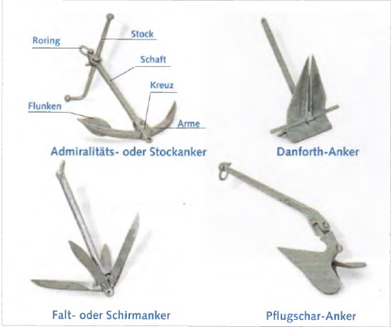
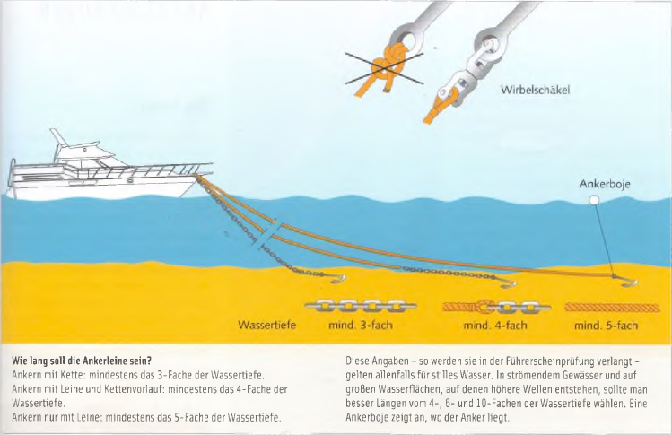
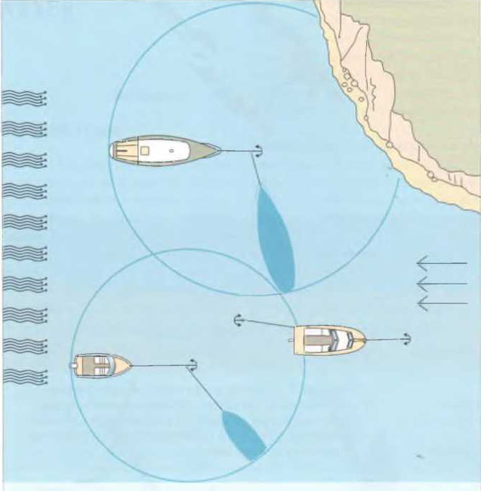

Якорь служит для надежного удержания судна на грунте или у берега. Он может буквально спасти жизнь, если, например, при отказе двигателя судно дрейфует к опасному препятствию или в узкий оживленный фарватер.
Существует две основные концепции якорей:
якоря веса, эффективность которых основана главным образом на их собственном большом весе, и патентные или легкие якоря, которые при одинаковом весе обладают значительно большей удерживающей силой. Иначе говоря, при одинаковой удерживающей силе они могут быть значительно легче. Однако при заглублении в грунт их малый вес иногда является недостатком.

Адмиралтейский (штоковый) якорь относится к якорям веса. Он хорошо держит на каменистом, глинистом и заросшем грунте и считается хорошим универсальным якорем. В песчаном грунте он удерживает нагрузку, в 7–10 раз превышающую его собственный вес.
Недостатки: он относительно тяжел и неудобен. Один лап всегда торчит вверх, и при постановке на якорь или повороте цепь или канат могут за него зацепиться и непреднамеренно вырвать якорь. Модернизированный вариант — якорь «Fisherman» со складывающимися лапами, что облегчает его хранение.
Якорь Данфорта в сложенном виде отлично размещается. Он имеет по крайней мере втрое большую удерживающую силу, чем штоковый якорь. Тяжелые якоря Данфорта иногда даже трудно вырвать из грунта. Недостаток: он плохо держит на сильно заросшем или каменистом дне.
Плуговый якорь (CQR) считается одним из якорей с наибольшей удерживающей силой среди яхтенных якорей. Как и Данфорт, он относится к безштоковым патентным якорям.
Недостаток: плохо держит на заросшем или глинистом грунте.
Складной или зонтичный якорь — небольшой якорь для легких лодок (например, с подвесным мотором). Его лапы складываются вдоль веретена и фиксируются, благодаря чему он занимает мало места.
Недостаток: по крайней мере одна лапа всегда направлена вверх и может запутаться в якорном канате.
Кроме того, на рынке существует множество других типов якорей под различными названиями. Часто это лишь варианты проверенных конструкций. На более крупных моторных яхтах некоторое распространение получил якорь Bruce.
О требуемом весе якоря для конкретного типа судна можно узнать из таблиц у поставщиков яхтенного оборудования. В целом действует правило: с точки зрения удерживающей силы на различных грунтах якорь не может быть слишком тяжелым. Ограничением служат лишь физические возможности экипажа или тяговое усилие якорной лебедки. Удерживающая сила любого якоря многократно увеличивается при наличии цепного предводителя.

Какой длины должна быть якорная линия?
Эти значения — как их требуют на экзамене на судоводительские права — действуют лишь для спокойной воды. В водах с течением и на больших акваториях, где образуются высокие волны, лучше использовать длину примерно 4-, 6- и 10-кратную глубине воды. Якорный буй показывает место, где лежит якорь.
Чем длиннее цепь или канат, тем лучше держит якорь. На легких лодках с подвесным мотором обычно достаточно якорного каната. На более крупных лодках — чтобы сэкономить вес — иногда используют канат, но между якорем и канатом должен быть вставлен цепной предводитель длиной не менее 6 м. Своим весом он тянет веретено якоря вниз, увеличивает сцепление с грунтом и предотвращает резкие рывки лодки в якорный трос, которые могли бы вырвать якорь. Приемлемый компромисс — канат с гибким свинцовым сердечником.
Якорный канат — вопреки широко распространенному мнению — не следует крепить к якорному кольцу беседочным узлом. На гладком синтетическом тросе он держит плохо и снижает разрывную прочность каната примерно на 50%.
Место для постановки на якорь следует выбирать тщательно. Оно должно по возможности находиться в воде без течения, быть защищённым от ветра — также с учётом возможных изменений направления ветра — и иметь хороший грунт для якоря.
Золотое правило: на реках становиться на якорь только в случае необходимости. Швартовка к берегу в любом случае безопаснее.

Если действует только течение или ветер из одного направления, все лодки поворачиваются в одну сторону и не мешают друг другу. Но если, например, течение направлено против ветра, якорные стоянки могут занимать разные положения. Это происходит из‑за различий в надводной и подводной части корпусов. Одна лодка больше поворачивается по ветру, другая — по течению. Лодка, закреплённая носовым и кормовым якорем, не поворачивается, а остаётся почти на месте при изменениях направления ветра или течения.